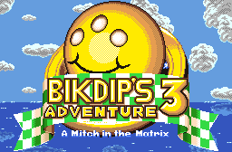
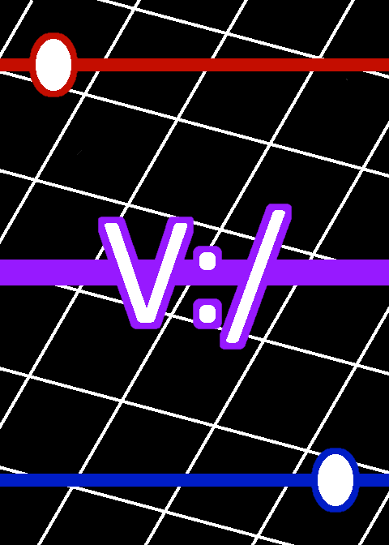
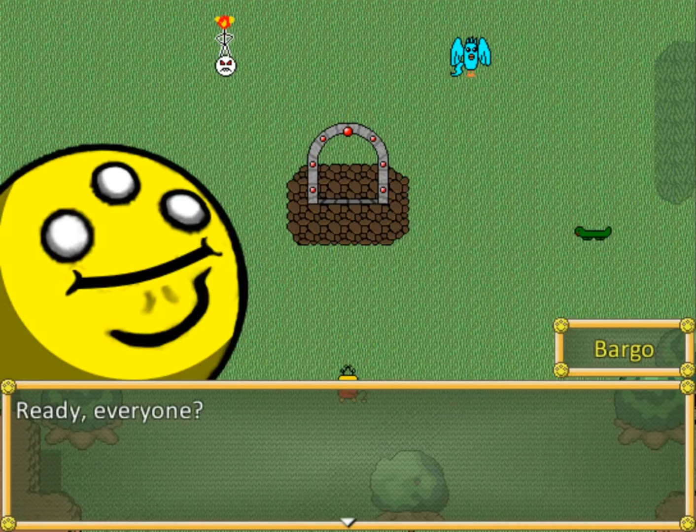

Bikdip's Adventure 3: A Mitch in the Matrix

The third entry in the Bikdip's Adventure series. I'm assisting the developer of the first two games, BikdipOnABus, with this game's creation using the deliberately outdated Zelda Classic version 1.92. Our mission statement is to push the engine to its limits and make the most impressive experience possible with its limited capabilities.
Virtuoso

Virtuoso is a virtual card game playable in Tabletop Simulator. Players build decks made up of virtual entities, objects, maps, and events to overwhelm the opponent's own strategy. The match and advantage effect systems allow for unique combinatorial synergy.
Bikdip RPG: Legend of the Seven Felfs

Bikdip RPG is a cancelled fangame made in RPG Maker VX Ace based on the videos of the Let's Player BikdipOnABus. It featured 5 fully playable dungeons, a town with many NPCs and an optional quest, and a partially developed battle system, all designed primarily by myself and one other person before being abandoned in 2018.